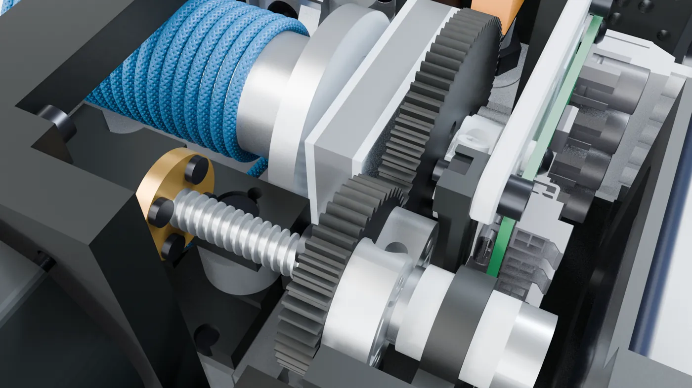
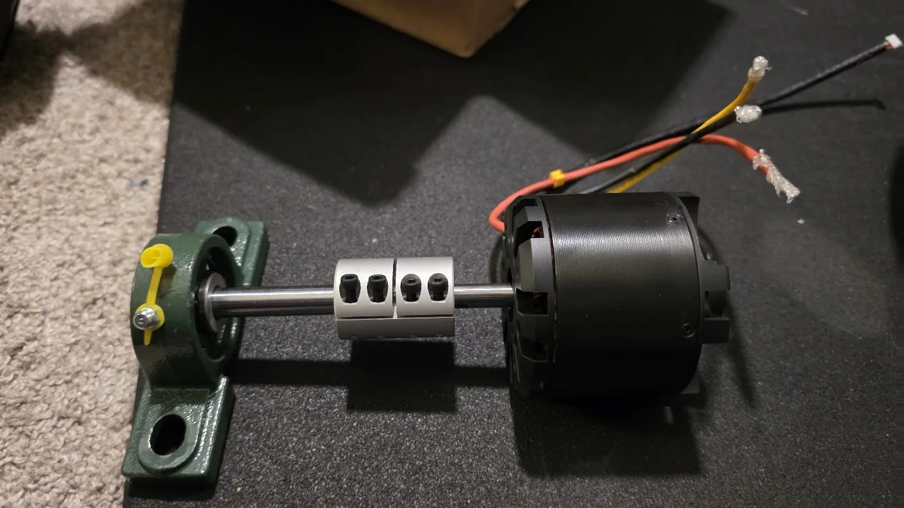
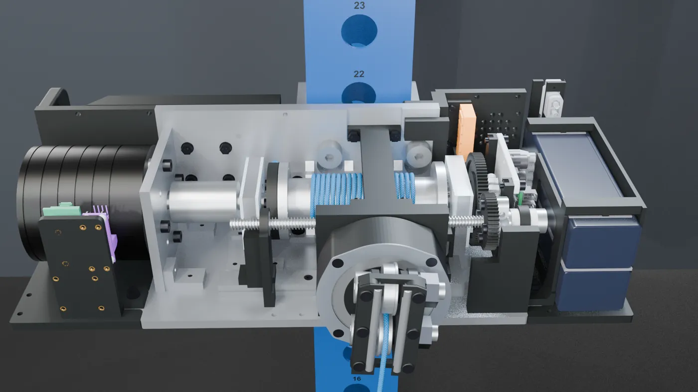

Verified files and documentation.
CAD, the parts list, firmware, software and assembly guides, published after the prototype is tested.
Get the files when they releaseOpen hardware · in development
Kinetiq Gym is an open-hardware digital resistance platform in development. Follow the physical build, testing, software, and verified CAD release.
Renders of the engineered design. The first physical prototype is being built now.
What Kinetiq does
A programmable digital-resistance platform, built as open hardware for people who want to train with it, build it, modify it, and program it.

Watch the design in action
This animation shows the current engineered design and planned user experience. The next step is proving the architecture in the full physical prototype.
Current build status
The aluminum build in CAD with five motor and power options, and the 1-minute animation of how the machine is meant to work.
Every part printed and fitted against the design, to catch CAD mistakes before any metal is cut.
The machined 6061 frame, bolted together with no welding, with the real battery and BMS. Proves the mechanics, cable routing, force control, safety and assembly.
CAD, parts list, firmware, software, and assembly and safety guides, released together. Kits follow if there is demand.

From the bench
The first parts are in: the motor, its clamp coupling and a 12 mm shaft. Next come the aluminum frame, machined in-house, then the drum and the level-wind.
Each stage is posted as it happens, failures and redesigns included. The build list gets the results first.
Why open
Most digital resistance systems are closed appliances. Kinetiq is being built so builders and researchers can inspect the mechanics, modify the hardware, write their own training modes, and build on the platform.
The files will be published once the physical machine has been built, tested and documented, so what you download is something that has actually worked. Until then, the build preview shows the current engineering in detail.

Where this is going
CAD, the parts list, firmware, software and assembly guides, published after the prototype is tested.
Get the files when they releaseMachined plates, printed parts or complete kits may follow the verified release. Nothing is for sale today.
Tell me you would want oneRobotics, motor control and rapid prototyping work, taken on a few projects at a time.
Discuss a project
Kits · planned
The laser-cut, tapped and countersunk plates, the machined bearing holders and brackets, and the drum and rack side ready to bolt together: the parts most builders cannot make at home. Printed-part sets and complete machines may follow.
Not for sale yet. Kits open only after the prototype passes load testing, and the waitlist hears first.
Who is building it
I design Kinetiq Gym end to end and build it in my own workshop: the mechanism and the CAD, the machined and printed parts, the electronics, the motor control and the software that ties them together.
The project is shared as it happens, including the parts that don't work the first time.
Engineering
Kinetiq Gym combines mechanical design, CNC machining, additive manufacturing, embedded electronics, motor control, real-time software, and rapid prototyping. I take on a limited number of custom engineering projects where that same stack is useful.
The build list · early access
Join the build list for prototype results, design changes, test data, kit availability, and the eventual verified CAD and software release.
Want a kit? This is also the kit waitlist: pick Buying a kit after you join, and you hear first when kits open.